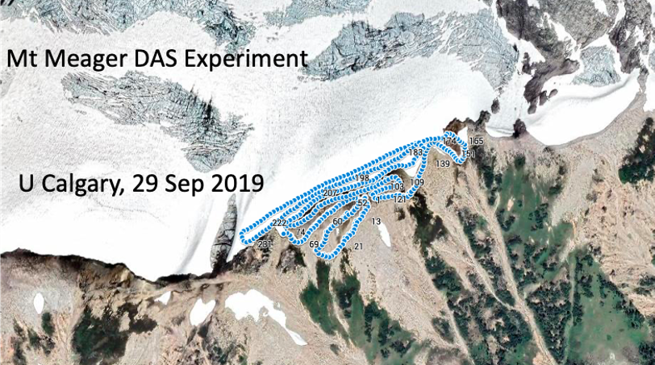

Services
projects
team
news
Contact
Contact us
Our Work
Distributed Acoustic Sensing
Mt.Meager project
Using optical fibers for geophysical monitoring
.
Project details

Global Strain Monitoring
A global IoT network for strain monitoring
Project details